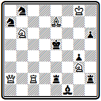

Глава 9
ЧЕШСКАЯ ШКОЛА
Кениг — основоположник чешской школы. Конкурсы журнала "Светозор". Добруский. Хохолоуш. Поспишил.
Сборник "Чешские шахматные задачи" и принципы чешской школы. Творчество чешских композиторов
Книга, всесторонне освещающая историю чешской школы, еще не создана. Имеются лишь отдельные статьи и воспоминания, написанные ветеранами чешской композиции. Сюда прежде всего относится пространная рукопись доклада И. Хохолоуша по истории чешской задачной композиции, подготовленного им для шахматного съезда в Брно в 1907 г. которая хранится в библиотеке Пражского шахматного клуба. Большая статья Я. Котрча увидела свет в 1928 г. в немецком задачном журнале "Промадас". Интересные воспоминания о выдающихся представителях ранней чешской школы оставил М. Хавель. Пользуясь всеми этими материалами, а также теоретическими статьями, опубликованными чешскими авторами в разных журналах, сборниками задач, отчетами о конкурсах, можно довольно полно воссоздать картину развития этого направления.
Чешская школа возникла в 60-х годах прошлого века. Ее признанным основоположником являлся художник Антоним Кениг. Первые свои задачи он напечатал в гг. Затем около четырех лет Кениг находился в Мюнхене, где совершенствовался в живописи. Здесь он начал серьезно заниматься шахматной композицией. Вернувшись в Прагу, он в гг. напечатал в отделе "Родинна кроника" основные правила составления шахматных задач.
С 1868 г. Кениг редактирует шахматный отдел в журнале "Светозор", которому суждено было сыграть большую роль в формировании чешской школы и стать первым ее центром. В этом отделе выдвигаются сподвижники Кенига - Маковский, Квичала, Пацлт и Дртина. Последний в 1868 г. завоевал I приз в конкурсе Западногерманского шахматного союза — первое отличие чешского композитора на международном конкурсе.
И. Дртина
Конкурс Западногерманского шахматного союза 1868 I приз
Мат в 5 ходов
1. Ла5 Л:а5 2. Лg4 К: f 5 3. Ке4 Кр: g 4 4. Ф g5 + hg 5. К f 6 # .
Журнал "Светозор" организует первые конкурсы составления задач и проводит их систематически на протяжении ряда лет.
Наконец, в этом журнале помещается большая теоретическая работа Кенига "Краткий трактат о шахматных задачах", печатавшаяся в течение января— апреля 1869 г. (35).
Здесь Кениг изложил свое понимание сущности композиции. Он считал, что шахматную задачу надо рассматривать прежде всего как произведение искусства, что она должна удовлетворять определенным эстетическим требованиям. Как и в любом другом виде искусства, в задаче должны быть заложены некоторые идеи: " как без души нет жизни, так и без красивой идеи нет шахматной задачи ".
И, наконец, самое главное, задачной идеей может быть не только идея, относящаяся к игре, но и идея конечного положения, идея красивого правильного мата .
Это было новой системой взглядов на композицию, на долгие годы определившей путь развития чешской задачи.
Как проблемист Кениг больших успехов не достиг. Он участвовал в Лондонском конкурсе 1862 г. и получил там почетный отзыв.
Задача № 000 из этой посылки. Легкое построение, четкая игра приводят к финалу с тремя правильными матами:
№ 000
А. Кениг Лондонский конкурс, 1862, Почетный отзыв
Мат в 5 ходов
1. Фе7 Kd 5+ 2. Кра7 К:е7 3. Л b 4+ Kpd 5 4. Л b 5+ и либо 4... Кре6 5. Kd 8#, либо 4... Кр:с6 5. Лс5#, либо, наконец, 4... Кр:е4 5. Ле5# (2... К b 6 3. Л: b 6 Kpd 5 4. Ф d 6+ или 2... Ке 6 3. Фс5+). Дополнительные варианты: 1... Кр b 3 2. Кра7+ Крс2 3. Kd 4+ Kpc 1 4. Фа3+ и 1... К g 4 2. Фс5 + Кр b3 3. Кра6+ Крс2 4. Ф:с 3+ .
Кениг завоевал несколько отличий в конкурсах "Светозора", в том числе I приз во втором конкурсе 1871 г.
Однако сам он выше всех своих произведений ставил позицию № 000.
При изящном построении в тихих вариантах осуществляются две аналогичные игры с красивыми правильными матами:
№ 000
А. Кениг "Светозор", 1868 г.
Мат в 3 хода
1 . Cd 6 C : d 6 2. Фd8 Крс5 3. Фа5# и 1... Сс5 2. Фа5 Кр: d 6 3. Фd8#. Интересна дополнительная игра 1... Са3 2. С:а3, 1... С~ 2. Фd7, 1... с5 2. Cf 8.
Конкурсы "Светозора" проводились для чешских авторов на составление трехходовых задач. Первые четыре года, с 1870 г., такие состязания проходили ежегодно, пятый был проведен в 1877 г., а последний, шестой, состоялся лишь в 1885 г.
Проблема № 000 получила высшее отличие на первом конкурсе.
№ 000
А. Квичала "Светозор", 1870 г. I приз

Мат в 3 хода
После хорошего вступления 1. Лс3, жертвующего белого ферзя, возникает угроза 2. Ф d 5+. Главные варианты получаются при игре черной ладьи: 1... Л:а2 2. Ле3+- Kpd 4 3. Kf 5# и 1... Л d 2 2. Фе 6+ Кр:е 6 3. Ле 3# .
Два одинаково красивых, хотя и совершенно различных по рисунку, правильных мата производят большое впечатление.
Добруский позже говорил, что это была первая настоящая задача чешского стиля.
Очень красива по построению задача № 000, победительница четвертого состязания "Светозора",
№ 000
К. Маковский "Светозор", 1873 г. I приз

Мат в 3 хода
в которой два правильных мата получаются в главном варианте 1. Cd 3 (с угрозой 2. Фа 6) 1... С: d 3 2. Ф h1 Кр: d 4 3. Кс 6# или 2... f 5 3. Ф h 8 #.
Хохолоуш в упомянутом докладе дает периодизацию развития чешской школы. Первый период (эра Кенига, как он его называет) охватывает 1860—1871 гг. Второй период начинается "в январе 1871 г., когда в отделе "Светозора" была напечатана первая задача не известного до того автора, знаменитого Я. Добруского".
"Эра Добруского", которую Хохолоуш датирует годами, ознаменовалась четким оформлением чешских принципов в практическом творчестве. Кениг указал чешской школе принципиальное направление. Добруский оформил и конкретизировал ее стиль. Кениг явился идейным вдохновителем, а Добруский — практическим реформатором чешской задачи. Его выдающаяся техника позволила ему создать классические образцы чешского стиля, не потерявшие своего значения до сего дня.
Три следующие задачи Добруского выходили победителями в конкурсах "Светозора". На диаграмме № 000— одно из ранних его произведений.
№ 000
Я. Добруский "Светозор", 1872 г. I приз
Мат в 3 хода
Здесь есть еще технические шероховатости, слаб первый ход, но матовые картины свежи и интересны:
1. С:d7 (с угрозой 2. Фd6+) 1... С:с4 2. Фа5+ К:а5 3. Се7# и 1... Кра4 2. Фс5 С:с4 3. Фа5#, последний мат правильный при связанном черном коне: 1... Са6 2. С:с6; 1... Са4 2. a3+.
Задачу № 000 отличает наряду с интересными матовыми позициями содержательная игра.
№ 000
Я. Добруский "Светозор", 1877 г. I приз

Мат в 3 хода
Первым ходом 1. Фа8 белые жертвуют ферзя для отвлечения черных фигур. При 1... С:а8 используется включение белого слона на поле е6— 2. Л:f4+ Кр:е5 3. Kg6#; после взятия ферзя конем 1... К:a8 белые получают возможность тихим ходом 2. Cg7 создать угрозу мата 3. Ле5# и дать красивый далекий мат слоном в случае взятия ладьи королем 2. Кр:е4 3. Сb1#, если же 2... С:е4, то матует 3. Се6# с блокированием поля е4. 1... Кр:е4 2. Сb1+ Кр:е5 3. Фа1#; 1... С:е4 2. Се6+ Кр:е5 3. Фа1#; 1... Кс8 2. Ф:d5, угроза 2. Фе8.
Классическим образцом чешского стиля следует признать композицию № 000. Здесь все гармонично и красиво — экономичное построение, четкая игра, а главное, непринужденное сочетание трех совершенно непохожих правильных матов, каждый из которых — настоящая картина:
№ 000
Я. Добруский "Светозор", 1885 г. I приз

Мат в 3 хода
1. Cd8 Се2 2. Ла5+ (угроза) 2... Крb6 3. Кс4# — мат конем при связанной черной ладье: 1... Крb5 2. Фc6+ Л:с6 3. Ла5# мат ладьей с использованием включения слона; наконец, 1... Kpd4 2. Cf6+ Kpc5 3. Фh5# — великолепный фронтальный мат ферзем.
Все три мата даются на разных нолях, фигуры белых непрерывно меняются ролями, до минимума сведено число белых пешек, которые неизбежно создают впечатление статичности. Задача является прекрасным воплощением эстетических принципов Кенига, здесь достигнуто то гармоническое соответствие между легкостью и изяществом начальной позиции, хорошим первым ходом и красотой матовых картин, которые Кениг провозгласил идеалом шахматной задачи.
Добруский обладал выдающейся техникой, с особенной силой проявившейся в четырехходовой форме. Четырехходовки с несколькими вариантами, оканчивающиеся правильными матами, являются труднейшим видом композиции. История знает всего несколько проблемистов, которым удавалось создавать хорошие образцы этого жанра. Первым и едва ли не самым крупным из них был Добруский. Познакомимся с некоторыми образцами его творчества в этой области.
Задача № 000 относится К раннему периоду творчества Добруского, но уже отличается зрелым мастерством.
№ 000
Я. Добруский "Светозор", 1878 г.
Мат в 4 хода
Главный вариант получается при 1. Лс4 С:d3. Блокирование поля позволяет играть 2. Kd7 с продолжениями 2... С:с4 3. Kf6+ Кре6 4. Cd7# или 3... Крс5 4. Фg1# и 2... Кр:с4 3. Кb6+ Крс5 4. Фg1# (2... Кре6 3. Фf6+). Еще один правильный мат в варианте 1... de 2. Ф:e5+ Кр:с4 3. Сb5+ Крb3 4. Kc1#. Дополнительные варианты: 1... Кре6 2. Cd7+ Kpf6 3. Kf3+ и 1... Kg~ 2. Фh1 Кре6 3. Cd7+.
Проблема № 000 отмечена высшим отличием на крупном международном конкурсе. Целая сеть интересных вариантов заканчивается правильными матами.
№ 000
Я. Добруский "Брентанос чесс мансли Светозор", 1878 г.
Мат в 4 хода
Наиболее содержателен вариант 1. С:а7 Кр:d6 2. Кс4+, где в зависимости от ответа черного короля получаются два разветвления, заканчивающиеся одинаковыми матами, но при положении черного короля на разных полях: 2... Крс7 3. Фb8+ К:b8 4. Сb6# и 2... Kpd5 3. Фе4+ К:е4 4. Се6#. Такие повторяющиеся аналогичные матовые картины получили название эхо-матов, причем если черный король стоит на полях разного цвета (как в данном случае), то маты называются эхо-хамелеонными. Другие варианты, заканчивающиеся правильными матами, таковы: 1... Кb8 2. Kf7 Кc6 (2... Крс6 3. Фb6+, 2... ~ 3. Фd1) 3. Фb3+ К:b3 4. е4#; 1... Ке5 2. Фе4+ К:е4 3. Се6+ Кр:d6 4. Kb5#; 1... К:f6 2. Кс4 (цугцванг) 2... Kf~ (2... Кр:с4 3. Фс2+) 3. Фе4+ К:е4 4. Се6#. Дополнительные игры: 1... Кре5 2. Кс4+ Kpf4 3. Ке6+ или 2... Kpd5 3. Фе4+; 1... Кb6 2. Ф:b6 Кре5 3. Ф:с5+; 1... Kd3 2. Ф:d3+; 1... Кс~ Kpd4 2. Фе4+.
Классическая позиция представлена на диаграмме № 000.
№ 000
Я. Добруский Конкурс германского шахматного союза, 1889 г. II приз

Мат в 4 хода
После 1. Сb6 в зависимости от отступления черного коня развиваются две симметричные игры: 1... Кс2 2. Фb5+ Kpd6 3. Сс5+ Кре5 4. Се7# или 1... Ка6 2. Фd3+ Кре5 3. Cd4+ Kpd6 4. Сf6# —эхо-варианты. Интересен вариант 1... е5 2. Лс8+, в котором при 2... Kpd6 3. Cc5+ Kpd7 4. Фh3# получается красивый правильный мат, а при 2... Кре4 3. Лf8 Kd3 4. Фb7# используется блокирование поля d3. Аналогичное блокирование поля d4 проходит в варианте 1... Кc6 2. Лd4+ Кре5 3. Фf3 К:d4 4. Сс7#. Любопытно разветвление 1... Kpd6 2. Ф:b4+ Кре5 (2... Kpd7 3. Лс7+) 3. Фf8, где у черных остается единственный ход, приводящий к мату, 3... Kpd5 4. Фс5#. 1... Крe5 2. Фg3+ Kpd5 3. Лd4+ или 2... Kpf6 3. Cd8+.
В чрезвычайно экономичной форме представлена живая разнообразная игра при трех красивых правильных матах.
Наконец, еще одна четырехходовка Добруского (№ 000), в которой имеются и тонкие тихие ходы, и эхо-хамелеонные маты, и свободная игра фигур на значительной части доски.
№ 000
Я. Добруский "Шахове листы", 1900 г.

Мат в 4 хода
Решает ход 1. Фf1, создающий угрозу 2. Kh(d)5+ Kpe5 3. Фf6+. Взятие ладьи ведет к варианту с идеей извлечения черного короля — 1... Кр:g4 2. Kh5 Kp:h5, король пытается уйти от угрозы мата на f3, но ходом 3. g4+ белые заставляют его выбраться из укрытия и дают два правильных мата 3... Кр:g4 4. Фf3# и 3... hg 4. Фh3#. В разветвлении 1... Кре4 2. Л:g5 Kpd4 3. Kd5 Kpc4 4. e3# черный король сам, почти без принуждения, совершает далекий марш и попадает в матовую сеть (2... Кре3 3. Лd5, 2... ~ 3. Фf3+). В двух следующих вариантах получаются хамелеонные фронтальные маты ладьей: 1... Кс2 2. Kd5+ Кре6 3. Кс3~ 4. Ле4# и 1... gf 2. Ф:f4+ Кре6 3. Лg5 Кре7 4. Ле5#. На 1... Кре3 следует 2. Kd3+ Кре6 3. Л:g5. Поражает в этой задаче подвижность черного короля — он получает маты на полях h5, e7 и с4.
Добруский в своих задачах делал главный упор на вступительный ход, затем на тихую игру и взаимодействие черных фигур. Добруский научил чешских композиторов ценить идейную игру при красивой позиции и чистых и экономичных матах. Он всегда отдавал предпочтение задачам с угрозой, говоря, по воспоминаниям Хавеля, что "цугцванги — игра коварная, угроза же предполагает честный, открытый бой, голова против головы".
Сборник задач Добруского был издан в Праге в 1907 г. вскоре после его смерти (36).
Одновременно с Добруским начала свой творческий путь целая плеяда известных чешских композиторов.
Я. Пилначек добился значительных успехов в облюбованной им области трехходовок с тихими вторыми ходами. Он как бы развивает свои задачи из двухходовки, поделает это весьма искусно, непринужденно добавляя к главной игре ряд хороших вариантов.
Его задача № 000 содержит две интересные игры с пожертвованием ладьи:
№ 000
Я. Пилначек "Чешские шахматные задачи", 1887 г. II приз

Мат в 3 хода
1. Kg6 Kpd5 2. Ле4 С:е4 3. Kf4# или 2... Кр:е4 3. Ф:b7# и 1... Се4 2. Л:f5 С:f5 3. Kf4# или 2... Кр:f5 3. Фа7#, к которым добавлен третий тихий вариант 1... е2(~) 2. Л:d4 С:d4 3. Kf4#.
Почетное место среди чешских проблемистов занимал К. Конделик. Он стал призером в одном из первых конкурсов "Светозора".
В гг. Конделик жил в Париже и несколько отошел в своих работах от чешской школы.
Из этого периода интересна его задача, отмеченная III призом в конкурсе Германского шахматного союза 1887 г.:
К. Конделик Конкурс Германского шахматного союза 1887 г III приз

Мат в 4 хода
1. Фh8 b3 2. Ла1 b2 3. Лb1. , но по возвращении в Прагу вернулся к ее принципам. Приводим его четырехходовку № 000 с рядом интересных вариантов.
№ 000
К. Конделик "Чешские шахматные задачи", 1887 г.

Мат в 4 хода
Вступление 1. е4 создает короткую угрозу 2. Фd5#. В главной игре 1... de 2. Фf6+ Кре4 3. Kg5+ Kpd3 4. Kf4# или 2... Kpd5 3. K5f4+ Kpe4 4. Kg5# дважды используется перекрытие черного слона. На 1... Кс3 следует тихий xoд 2. Kg1 с угрозой 3. Kf3# и затем 2... К:е4 3. Kf3+ Kpf5 4. Фd7#. Два чистых мата осуществляются в добавочном варианте 1... Сb7 2. Фе8+ Kpd6 3. e5+ Крс7 4. b6# или 3... Kpd5 4. Kf6#.
Наиболее выдающимся из сподвижников и соратников Добруского был И. Хохолоуш. Начав составлять задачи в 1872 г. и отличаясь очень большой продуктивностью, Хохолоуш быстро выдвинулся в число наиболее популярных проблемистов. Он много выступал за границей, имел успехи в международных конкурсах и много содействовал пропаганде идей чешской школы. Активная творческая деятельность Хохолоуша продолжалась около 60 лет, в течение которых он составил около 3000 задач.
Хохолоуш выступил с рядом статей и теоретических работ. Интересна его работа по вопросу классификации задач, напечатанная в "Дейче шахцейтунг" в 1890 г.
В результате изучения многочисленных примеров Хохолоуш пришел к заключению, что следует различать четыре типа задач:
с одной идейной игрой,
с двумя симметричными идейными играми,
с двумя аналогичными идейными играми и
с комплексом вариантов.
В своей статье Хохолоуш приводит примеры других авторов, но можно иллюстрировать эту классификацию его же собственными задачами. Примером одновариантной задачи служит позиция № 000.
№ 000
И. Хохолоуш Конкурс Германского шахматного союза 1883 г. Почетный отзыв

Мат в 4 хода
Главный вариант получается при 1. Фd3 f1К 2. Ле6+ de 3. d6 с тремя правильными матами 3... Кр:f6 4. Cg7#, 3... С:f6 4. f4# и 3... ~ 4. K:g4#. Дополнительные варианты: 1... Кр:d6 2. Ке8+ Крс5 3. С:е3+; 1... С:f6(~) 2. Cf4+ Кр:f4 3. Фе4+; 1... ~ 2. Ф:е3+.
Подобный стиль одновариантных задач господствовал в классической немецкой школе.
Композиции с двумя симметричными идейными вариантами культивировал Р. Браун, их даже называли брауновскими задачами.
Вот проблема № 000.
№ 000
И. Хохолоуш "Детройт фри пресс" 1883 г. I приз

Мат в 3 хода
После 1. Фc6 грозят маты ферзем на с4 и е6. Защищаться надо, уходя ладьей f3. На 1... Лf5 решает 2. Лd8+ Кре5 3. Фе8#— чистый мат, при 2... Лd5 следует правильный мат 3. Ф:d5#. Совершенно симметрично проходит игра при 1... Лd3 2. Ла5+ Kpd4 3. Фа4# и 2... Лd5 3. Ф:d5#. Есть еще вторая пара симметричных вариантов: 1... Лf4 2. Kg1 Лf~ 3. Фс4# и 1... Ле3 2. Кh2 Ле~ 3. Фе6#.
В качестве одного из лучших примеров задач третьей группы с двумя аналогичными идейными вариантами Хохолоуш указывает задачу Поспишила, приводимую далее под № 000. Немало подобных произведений можно найти и у самого Хохолоуша.
В позиции № 000 аналогичная игра развертывается в двух первых вариантах:
№ 000
И. Хохолоуш "Светозор" 1885 г. III приз

Мат в 3 хода
1. Kb6 c5 2. Cd5 ~ 3. Kf5# и 1... ~ 2. Cg4 ~ 3. Кс8#. Дополнительная игра: 1... Кd7 2. Kc8+ Кре6 3. f5# с правильным матом и 1... Ка6 2. Фе5+ Kpd8 3. Kf7# или 2... Kpf8 3. Kd7# с двумя чистыми матами.
Сложнее представлен тот же замысел в четырехходовке № 000.
№ 000
И. Хохолоуш Пражский конкурс 1891 г. Почетный отзыв

Мат в 4 хода
Первый ход 1. Kf5, жертвующий коня и предоставляющий черному королю два свободных поля, создает трехходовую угрозу с правильным матом 2. Фе2+ Kpd5 3. Kge7#. На 1... Ле1 белые используют блокирование поля ладьей 2. Фd4+ Kpf3 3. Kgh4+ Kpe2 4. Kg3#. Совершенно аналогичный мат с использованием блокирования поля b4 получается в варианте 1... К:b4 2. Фе3+ Kpd5 3. Kge7+ Крс4 4. Kd6#. Третий правильный мат, несколько отличный от двух первых, проходит после 1... gh 2. Kd6+ Kpf3 3. Ке5+ Kpg3 4. Kf5#. Дополнительные игры: 1... Kc1 2. Kpf7 Kpf3 3. Kgh4+ или 2... ~ 3. Фе3+; 1... Кc6 2. Фе2+ Кр~ 3. Ф:g4; 1... Кс3 2. Фg2+ Кр~ 3. Ф:g4.
Наибольшее значение придает Хохолоуш задачам с комплексом идейных вариантов, завершающихся правильными матами. Он подчеркивает, что "первый, кто обратил внимание на такие задачи, и не только в чешской школе, но и во всей мировой литературе, был Добруский". Критикуя английских авторов, которые, составляя подобные задачи, не заботятся об экономичности матов, Хохолоуш называет их произведения "неэстетическими комплексами вариантов". В этой группе задач под идейной игрой подразумевается совокупность всех вариантов.
На диаграмме № 000 приведена одна из лучших композиций Хохолоуша.
№ 000
И. Хохолоуш Пражский конкурс 1895 г. IV приз

Мат в 3 хода
Тонким первым ходом 1. Крb1 белый король освобождает поле для слона и создает угрозу 2. Cc1 и 3. f3#. При 1... bа, угрожающем шахом белому королю, он сам решительно вступает в игру, используя отвлечение черной пешки —2. Крс2 и 3. Фh1#. После 1... Сс5 2. Сb7+ Kpf5 3. Фd7# сказывается открытие линии "d", в случае же 1... с3 2. Фh1+ Kpd3 3. Са6# —открытие диагонали а6-d3 и блокирование поля с3.
В 1880 г. восходит новая звезда чешской композиции — Иозеф Поспишил. Он быстро выдвигается и уже в 80-х годах завоевывает всеобщее признание. По числу призов, полученных им на международных конкурсах, Поспишил превосходит всех чешских проблемистов. Значительных успехов добивается он и в чешских конкурсах.
Первый чешский шахматный конгресс состоялся в 1872 г., но следующий удалось созвать только через 14 лет. В это время в Праге уже существовал Чешский шахматный клуб, организовавший первый международный конкурс составления задач по разделам трех - и четырехходовок. Второй международный конкурс был проведен в 1891 г. в связи с III Чешским шахматным конгрессом, третий — в 1895 г. по случаю очередного конгресса. Следует еще упомянуть о большом международном конкурсе составления трехходовок, организованном в 1898 г. все тем же пражским клубом.
Задача № 000 получила высшее отличие на первом международном конкурсе.
№ 000
И. Поспишил Пражский конкурс, 1886 г. I приз

Мат в 3 хода
После 1. Ка4 грозит мат ферзем с поля е3 после промежуточного 2. Кb6+ или 2. Kc7+. На 1... Cd4 можно жертвовать ферзя 2. Фс5+ С:с5 3. Кс3#. Парадоксально: до хода слона на d4, когда поле с5 не было атаковано, эта жертва не проходила ввиду отсутствия ответа на взятие ладьи королем. Аналогичная жертва ферзя на d6 становится возможной после отвлечения черного ферзя от поля f6, с которого белые дают идейный правильный мат: 1... Фg3 2. Фd6+ ed 3. К:f6#. Однако при другом отвлечении ферзя 1... Ф:f2 этот вариант уже не проходит, так как снова нет мата на взятие ладьи королем, но теперь возможно 2. К:f6+ ef 3. Кс3#. Правильные маты получаются еще в двух вариантах: 1... с5 2. Кс3+ С:с3 3. Фа8# и 1... Кр:е4 2. Фе3+ Kpd5 3. Кb6#. Любопытен тихий вариант 1... Сb3 2. f3 b4 3. Ф:b1# с использованием привлечения черного слона на поле b3. В целом очень интересная и содержательная задача.
А вот несколько произведений, принесших Поспишилу победу на конкурсах Германского шахматного союза.
Трехходовка № 000 построена на цугцванг.
№ 000
И. Поспишил Конкурс Германского шахматного союза, 1885 г. I приз

Мат в 3 хода
Первый ход 1. К:g6 заканчивает подготовку ответов на все ходы черных. Двумя правильными матами завершается вариант 1... Л:а8 2. Kb5+ Kpd3 3. Kf4# и 2... Kpd5 3. Ке7#. На 1... Сb4(с3) белые используют отвлечение слона от поля h5, играя 2. Kf4 и грозя матом ферзем с h8, а в случае взятия ферзя 2... Л:аКb5#. На любой другой ход черного слона 1... С~ проходит 2. Лd2+ Кре3 3. К:с4#, при 1... cd повторяется мат первого варианта 2. Фh8+ Kpd3 3. Kf4#. Дополнительная игра: 1... с3 (g3, gh) 2. К:f5+; 1... с6(Крс3) 2. Фh8+; 1... Kpd3 2. Kf4+.
Венинк писал в своей исторической работе, что очень трудно словами охарактеризовать особенности чешской школы. Чтобы их понять и почувствовать, надо смотреть и изучать лучшие примеры их творчества. Таким образцом чешских идеалов наряду с приведенной выше композицией Добруского (№ 000) может служить задача № 000.
№ 000
И. Поспишил Конкурс Германского шахматного союза, 1889 г. I приз

Мат в 3 хода
Легкая, как бы ажурная конструкция, изящество и красота игры и матовых позиций производят впечатление полной художественной завершенности. 1. Лh4 с угрозой 2. Се4+ Кре5 3. Фа1# красивый диагональный мат. На 1... К:f8 белые, используя отвлечение коня, предлагают жертву еще двух фигур — 2. Ле4 с двумя правильными матами 2... К:g6 3. Фа8# или 2... С:е4 3. Ф:е4#. При 1... Kf6 белые снова жертвуют ладью, вскрывая горизонталь для нового, уже фронтального, мата ферзем 2. Лd4+ cd 3. Фb5#.
Техническое мастерство Поспишила проявилось в успешных выступлениях его на тематических конкурсах. В частности, в первом конкурсе газеты "Мюнхенер нейесте нахрихтен" 1889 г. была предложена тема: "Два диагональных мата белым ферзем при положении короля на полях разного цвета; матующий ферзь должен находиться по крайней мере через одно поле от короля, а белые кони — атаковать в матовых позициях по четыре поля". Приз за лучшее выражение этой темы получила проблема № 000.
№ 000
И. Поспишил "Мюнхенер нейесте нахрихтен", 1889 г. I приз

Мат в 3 хода
Идейные варианты 1. Фf1 Крс5 2. К:с7 Крb6 3. Фg1# и 1... Кре4 2. Kc6 cd 3. Фb1# подкупают простотой решения и абсолютной идентичностью красивых матовых картин. К этим двум вариантам непринужденно добавлен третий правильный мат 1... с6 2. Фе2 Крс5 3. Ке6#.
В заключение — еще два совершенных образца творчества Поспишила в ортодоксальном чешском стиле.
Задача № 000 содержит четыре аналогичных варианта с красивыми правильными матами конем.
№ 000
И. Поспишил "Злата Прага", 1885 г.

Мат в 3 хода
После 1. Фd1 грозит 2. Фf3+. Черные могут уходить королем или защищать поле f3 слоном. На каждый из этих ходов следует самостоятельный идейный вариант: 1... С:g2 2. Фg4+ Kpd5 3. Kb4#; 1... Kpd4 2. Фа4+ Kpd5 3. К:с7#; 1... Kpd5 2. Фb3+ Крс6 3. Kb8#; 1... Kpf5 2. Фf3+ Кре6 3. Кс5#.
Весьма оригинальна по замыслу и исполнению композиция № 000.
№ 000
И. Поспишил "Светозор", 1891 г.

Мат в 3 хода
Рассматривая начальное положение, можно заметить, что на два хода черной пешки d6 имеются красивые готовые ответы с аналогичными правильными матами (1... dc 2. Фf3 Крс4 3. Ле4# и 2... с4 3. Фе3#; 1... de 2. Лс2 Кре4 3. Лс4# и 2... е4 3. Фс3#). В решении не удается полностью сохранить эти красивые варианты, симметрия разрушается, и один из ответов белых заменяется новым – 1. Лf2 С:с5 2. Лf4+(угроза) 2... Кр:е5 3. K:g6#; 1... Ке6 2. Кс6+ Кре4 3. Фf3#; на 1... dc сохраняется прежний ход 2. Лс2 с теми же двумя матами, но при 1... dc следует играть 2. Лf3 с сохранением лишь одного из старых правильных матов 2... с4 3. Фе3#. Очень оригинальная композиция.
Поспишил был не только выдающимся проблемистом. Он проявил себя и как теоретик чешской школы. В 1887 г. выходит первый сборник задач чешских авторов (37). Здесь Поспишил помещает большую вводную статью по теории шахматных задач, где излагает общие принципы современной композиции и специально останавливается на особенностях чешской школы.
Прежде всего Поспишил говорит, что шахматную задачу надо рассматривать с трех различных сторон:
как продукт шахматного творчества,
как произведение искусства и
как объект решения;
в этих трех аспектах он и ведет дальнейшее изложение.
Рассматривая задачу как шахматное произведение, Поспишил начинает с вопросов содержания, характеризуя элементарные тактические моменты, непременные во всякой задаче, затем говорит о главной игре и вариантах, оригинальности и правильности композиции. Останавливаясь на вопросе о дуалях, он пишет, что в дополнительных вариантах они допустимы, ибо иначе составлять задачу невозможно, не принося в жертву остальных эстетических принципов.
Переходя к задаче как произведению искусства, Поспишил развивает и конкретизирует принципы Кенига. Здесь он рассматривает вопросы о чистоте матовых позиций (чем больше в задаче чистых матов, тем выше ее эстетическая ценность), экономии средств (все фигуры, особенно белые, должны активно играть и участвовать в мате), требованиях к начальной позиции. В частности, он приходит к выводу, что "для проведения шахматных комбинаций наиболее удобна форма трех - или четырехходовки. Двухходовые задачи, как правило, отличаются значительно меньшей глубиной и трудностью; пятиходовые же задачи для современного уровня техники еще слишком трудны".
Наконец, рассматривая задачу как объект решения, Поспишил указывает на необходимость элементов трудности. Следует избегать дефектов построения, могущих облегчить решение. Глубокая идея, тонкая угроза, неожиданные защиты — все это должно быть скрыто от решающего, а обнаружение основного замысла доставлять ему удовлетворение.
Дальше Поспишил говорит, что указанные общие принципы составления задач, являющиеся итогом длительной практики, принимаются всеми проблемистами. Грубое нарушение одного из перечисленных эстетических законов приводит к нарушению гармонии, разрушению задачи. Но выбор тех или иных принципов в качестве основы для индивидуализации творчества, предпочтение одного закона перед другими является естественным и приводит к образованию задачной школы.
Английские и американские задачные композиторы в основу кладут достаточную трудность решения, стремятся к оригинальности; немецкие мастера добиваются безупречной конструкции и глубокого содержания. Если попытаться коротко охарактеризовать принципы чешской школы, продолжает Поспишил, то следует выделить стремление создавать произведения, отвечающие главным образом требованиям эстетики.
Идеальная красота в полном смысле этого слова является первым и основным принципом чешской школы.
Это стремление к красоте идет в нескольких направлениях. Здесь и красота основного замысла, раскрываемого в главной игре или, лучше, образуемого совокупностью ряда красивых вариантов; и безоговорочное выполнение специальных законов задачной эстетики, особенно чистоты и экономичности матов, а также изящества начальной позиции, и красота решения, заключающегося в естественности и элегантности всех комбинаций. Чешская школа не преуменьшает важности глубокого, безупречного содержания задачи и скрытости решения, но в случае необходимости жертвует этими требованиями в пользу главнейшего — красоты.
Так излагал Поспишил принципы чешской школы, и сам он последовательно руководствовался ими в своем творчестве. Сборник задач самого Поспишила под названием "Чешские мелодии" вышел в 1908 г. в уайтовской серии (38). Небольшое дополнение к этому собранию было издано после его смерти (39).
Эра Поспишила, которой Хохолоуш отводит время с 1882 по 1895 г., ознаменовалась выдвижением большого числа крупных мастеров чешской задачи, многие из которых получили мировое признание.
В первую очередь необходимо отметить К. Тракслера. Начав составлять задачи в 1883 г., он продолжал активную и весьма успешную деятельность до 30-х годов нынешнего столетия. Уже в XIX веке он добился таких достижений, что Хохолоуш считает возможным писать: "Добруский, Поспишил, Тракслер — тройка мастеров, каких было мало в области шахматной поэзии", ставя Тракслера в один ряд с его выдающимися соотечественниками.
Очень элегантна композиция № 000. При красивом построении она дает сочетание трех правильных матов, два из которых образуют эхо:
№ 000
К. Тракслер "Злата Прага", 1889 г.

Мат в 3 хода
1. Cd2 Ле4 2. Фа6+ Kpd4 3. Сс3# и 1... Kd4 2. Kb6+ Крb5 3. Сс4#. В первом случае белые используют блокирование поля е4, во втором — перекрытие ладьи. Третий правильный мат 1... с6 2. Ке7+ Kpd4 3. К:с6#.
Однако больше внимания Тракслер уделял задачам с тихими ходами, с острыми жертвами, придающими решению пикантность и остроту. В этом стиле составлены его лучшие произведения. Задача № 000, безупречная по построению, содержит интересную игру с тонкими, скрытыми жертвами ладьи.
№ 000
К. Тракслер "Бритиш чесс мэгезин", 1900 г. I приз

Мат в 4 хода
Вступление 1. Кf5 создает угрозу жертвы ладьи для освобождения поля f3—2. Ле3+ fe 3. Kd6+. После 1... cb 2. Фd4+ Kp:f5 жертва ладьи повторяется, но уже преследует цель вскрытия четвертой горизонтали и осуществляется без шаха: 3. Ле3 fe (грозило 4. Фе5#) 4. Cg4# — первый правильный мат слоном при поддержке белого ферзя. В случае 1... С:f5 ладья снова жертвуется, но уже на другом поле и опять без шаха — 2. Л:d3. Грозит 3. Сf3+ Кр:d3 4. Фс3#, а на 2... Кр:d3 следует 3. Фс3+ Кре4 4.Cf3# — второй правильный мат слоном при поддержке ферзя. Легко убедиться, что обе матовые картины совершенно идентичны, только сдвинуты относительно друг друга на один ряд вниз и влево. Четвертый правильный мат получается в последнем варианте при 2... f3 3. С:f3+ Kpf4 4. Фd6#. Дополнительные варианты: 1... d2 2. Лс3 d1Ф 3. Kd6+ и 1... Kpd5 2. Л:d3+ Kpc4 3. Kd6+. Композиция наглядно показывает, как типично чешская идея сочетания нескольких красивых матовых картин может осуществляться при содержательной игре.
Сборник избранных задач был издан Тракслером совместно с видным мастером и проблемистом Я. Котрчем в 1910 г. (40).
Книге предпослана вступительная статья по истории и теории шахматной композиции.
Из произведений Котрча рассматриваемого периода наибольшей известностью пользуется, пожалуй, задача № 000, которая содержит неожиданную острую игру.
№ 000
Я. Котрч Конкурс памяти Эндрюса, 1888 г. I приз

Мат в 3 хода
Трудный первый ход 1. Лg2 ставит черных в положение цугцванга. Наиболее красив вариант 1... е6, где белые жертвуют ферзя 2. Фf3 и используют силу стоящей в засаде ладьи 2... gf 3. Лg7#. Никакой другой ход ферзем к цели не ведет, так как черный король вырывается на свободу через с7. На 1... Кре6 белые переводят ладью в новую засаду 2. Ле2, за свою пешку е5, чтобы подготовить правильный мат 2... Kpd7 3. e6# и защищать пешку при мате ферзем 2... С~ 3. Ф:g4#. Два дополнительных варианта 1... Крс7 2. e6+ и 1... С:g2 2. Ф:g2 исчерпывают все возможности черных в этой легкой по построению, но совсем нелегкой дли решения позиции.
Четырехходовка № 000 составлена в ортодоксальном чешском стиле. Основу ее содержания составляют два варианта с жертвами тяжелых белых фигур и аналогичными правильными матами;
№ 000
Я. Котрч Пражский к онкурс, 1886 г. I приз

Мат в 4 хода
1. Са6 Kd 5 2. Л:е4+ Кр:е4 3. Cd 3+ Kpd 4 4. Ке6# и 1... Kpd 5 2. Ф d 3+ ed 3. Сс4+ Крс5 4. Kd 7#. В последнем варианте получается еще чистый мат при 3... Кре5 4. К: g 6# (не будь коня а2, он был бы и экономичным). Взятие черными этого коня на первом ходу 1... К:а2 не препятствует осуществлению угрозы 2. Kd 7+ Kpd 5 3. Фd 3 + cd 4. Сс4 # , но делает мат правильным. При рассмотрении задач чешских авторов надо иметь в виду подобный прием, чтобы не пропустить какой-либо вариант, содержащий правильный мат. Дополнительные игры: 1... К b 5 2. Kd 7+ Kpd 4 3. Kb 4; 1... Л f 5 2. Л: f 5+ Кр: f 5 3. Сс8+; 1... с5 2. Сс4 Сс 6 3. К: g 6 +
Не имея возможности подробно остановиться на творчестве других чешских проблемистов конца XIX века, приведем несколько характерных примеров из числа их лучших достижений.
Композиция № 000 открывается исключительно красивым и трудным первым ходом
№ 000
Я. Глинены Пражский к онкурс, 1891 г. I приз
Мат в 3 хода
1. Ла7. Ладья покидает сильную позицию, предоставляет королю два свободных поля только для того, чтобы уничтожить мешающую черную пешку. Грозит 2. Л: d 7 с правильным матом после 2... Kpf 6 3. Ф b 8#. При 1... Kpd 6 решает эффектная жертва ферзя для вскрытия седьмой горизонтали и блокирования поля е6: 2. Фе6+ de 3. Kf 7#. Движение черной пешки d7 приводит к двум вариантам: одному —с правильным матом 1... d 6 2. Кре3 Kpf 6 3. Ф h 8# и другому — с чистым 1... d 5 2. Кес 6+ Кре4 3. Ф: h 7 #.
Жертвы белых фигур были весьма популярны в чешской композиции в ее ранний период.
Характерны в этом отношении два следующих произведения. В примере № 000 белый ферзь жертвуется дважды:
№ 000
К. Мусил "Шахматный журнал" 1894 г. I приз

Мат в 3 хода
1. Ф b 5 Cd 4 2. Ф d 5+ Кр: d 5 3. е4# и 1... f 2 2. Ф f 5+ К: f 5 3. Cg 2# — в первом варианте для завлечения черного короля в матовую позицию, во втором—для отвлечения коня и блокирования поля.
Интересен вариант 1... Сс3 с тихим ходом 2. К b 6 С: e 1 и красивым фронтальным матом 3. Фе8 #, ставшим возможным вследствие блокирования черной пешки с4 слоном. Угроза 2. Се 6 .
В задаче № 000 ферзь жертвуется в варианте
№ 000
Я. Швейда "Нейе иллюстрирте блат", 1898 г. I приз

Мат в 3 хода
1. Kpg 1 d 3 2. Ф: g 4+ fg 3. Л f 4# для открытия пути ладье; в двух других разветвлениях жертвуются слои и ладья для завлечения короля: 1... Кс4 2. Cd 5+ Кр: d 5 3. Фg2# и 1... Kd 1 2. Л: f 5 Кр: f 5 3. Фd3#. Четвертый правильный мат получается при 1... Cd 8 2. Ф: b 5 С: f 6 3. Cd 5#. Угроза 2. Ф f1 .
Следует отметить, что в дальнейшем отношение чешских авторов к игре с жертвами несколько изменилось. Они начали расценивать жертву как прикрытие неэкономичности, своеобразное средство избавления от лишних фигур, и стали ограничивать использование этого приема, особенно жертвы сильнейшей фигуры — ферзя.
Пример № 000 интересен эффектной тихой угрозой,
№ 000
Л. Ветешник "Курьер варшавски", 1896 г. I приз

Мат в 3 хода
возникающей после 1. Кс5. Белые, сохраняя за черными возможность объявления шаха собственному королю, покидают ферзем сильную позицию и красивым длинным ходом становятся в засаду за свою пешку — 2. Фg1 Кр:с5+ 3. е4#. Можно осуществить угрозу и при другом порядке ходов: 2. е4+ Кр:с5 3. Фg1#, но на ответ, например, 1... с2, освобождающий поле с3, необходимо играть именно 2. Фg1. При 1... К c 6 используется перекрытие слона и блокирование поля: 2. Фg8+ Кр:с5 3. Kd 7#. В варианте 1... Кс4 2. Ф g 2+ Kp :с5 3. Kd 7# проходит тот же мат, но с использованием блокирования другого поля. На шах 1... Кр:с5+ - следует 2. Кс6+ Кр:с6 3. Ф b 5# с матом, который был бы правильным, стой черный слон на а8 вместо b7.
Большой популярностью пользовалась у чешских авторов тема эхо-матов. Повторение одного и того же матового положения с сохранением одинакового относительного положения основных действующих фигур в двух, а то и трех вариантах всегда привлекало пристальное внимание. Примеры подобных задач мы уже видели выше. Приведем еще один образец четырехходовки с тремя эхо-матами слоном— № 000.
№ 000
Л. Цимбурек Пражский конкурс, 1891 г. I приз

Мат в 4 хода
После 1. Ф g 3 грозит 2. С: d 6 Кр: f 5 3. Ф f 4+. Идейные правильные маты получаются в вариантах: 1... Kg 6 2. Фе 3 + Кр: f 5 3. Се6+ Kpf 6 4. Cg 5#; 1... Кр: f 5 2. Ф g 5+ Kpe 4 3. Cd 5+ Kpd 4 4. Ce 3#; 1... Kpd 4 2. Ф: d 3+ Kpc 5 3. C : d 6+ Крс6 4. Cb 5 # .
Задача № 000 отличается глубиной содержания при красивом построении и правильных матах.
№ 000
В. Тузар Пражский конкурс, 1895 г. I приз

Мат в 4 хода
У белых есть очень сильный ход 1. Ф g 7 с двумя угрозами: 2. Ке8+ Kpd 5 3. Ке7# или (например, если черные освободят королю поле с5 ходом ладьи) сначала 2. Ке7 с матом 2... Kpd 6 3. Ке4 #. Не спасает 1... Лс4, защищая поле е4, ввиду возможности использовать блокирование поля с4 путем 2. Ke 4+ Kpd 5 3. Ке7#. И все же ход 1. Ф g 7 сразу не решает, так как у черных находится очень тонкое опровержение 1... Ла5! Угроза 2. Ке8+ не проходит из-за освобождения поля с5, 2. Ке4+ освобождает поле с4, а тихий ход 2. Ке7 позволяет черным объявить встречный шах ходами слона а6. Необходимо предварительно сыграть 1. Ф f 8, создавая угрозу с жертвой ферзя 1... Л~ 2. К: d 7+ Kpd 5 3. Ф d 6+ cd и правильным матом 4. Ке7#. Только когда черные прибегнут к защите 1... С b 5, закрывая для ладьи поле а5, белые осуществят свой план — 2. Ф g 7 с указанными выше вариантами и двумя правильными матами: 2... Лс4(с6) 3. Ке4+ Kpd 5 4. Ке7(е3)# . Красивая тихая игра осуществляется и в разветвлении 1... Кр: f 5, также завершающемся правильным матом 2. Ф h6 е5 (грозил мат 3. Ф g 5 #) 3. Kd 5 Kp : g 4 4. Ке 3#. Выдающееся произведение.
Позиция № 000 интересна разнородностью правильных матов, несколько необычным материалом (отсутствуют белые кони) и своеобразием конструкции — у белых две батареи.
№ 000
В. Цизарж Пражский конкурс, 1898 г. II приз
Мат в 3 хода
В варианте 1. Ле2 f 5 2. Ф b 5+ Кре6 3. Cd 5# правильный мат дается двойным шахом; при 1... Kg 5 2. Cd 8+ Ке6 3. Сс7#— правильный мат со связанным черным конем; в двух остальных разветвлениях проходит мат слоном при положении черного короля на f4 один раз со смежного поля при поддержке ладьи 1... d 3 2. Сс5+ Kpf 4 3. Се 3#, другой — через поле от короля 1... К(С):е2 2. Cb 4+ Kpf 4 3. Cd 2 #. Последний вариант является и угрозой. Дополнительные варианты: 1... g 3(К b 3) 2. Фd7; 1... Kpf 4 2. Ф b 8+; 1... К f 8 2. С: f 8+.
В самом конце XIX века начали свой творческий путь три выдающихся мастера, которые уже в нашем столетии сыграли большую роль в дальнейшем развитии чешской школы — Зденек Мах, Мирослав Хавель и Эмиль Палькоска.
В 1898—1899 гг. Мах получил несколько отличий на международных конкурсах за задачи, отличавшиеся весьма своеобразным построением. В них на стороне белых участвовали, кроме короля и ферзя, лишь две-три фигуры при полном отсутствии пешек. Игра заключалась в создании трех-четырех разнообразных правильных матов. Примером может служить композиция № 000.
№ 000
З. Мах "Афтонбладет", 1899 г. специальный приз

Мат в 3 хода
Тонкий первый ход 1. Кра8, уводящий короля в укрытие, подготавливает осуществление тихой угрозы 2. Cf 5 с далеким фронтальным матом 2... gf 3. Ф g 8#. Другой подобный мат проходит уже по горизонтали после блокировании поля g3 - 1... Ф(С) g 3 2. Cf 6+ Кр f 4 3. Фс4#. В третьем варианте используется блокирование поля h3: 1... Ф h3 2. Ф f 6+ Кр: g 4 3. Ф f 4 # .
В том же стиле начал работать и Хавель, ставший в XX веке едва ли не крупнейшим представителем чешской школы.
Одна из его первых задач № 000 содержит четыре различных правильных мата:
№ 000
М. Хавель "Ческе листы шахове", 1899 г.
Мат в 3 хода
1. Кр b 5 угроза 2. Фа4+ d 4 3. Фа8#; 1... f 4 2. Kg 3+ fg 3. Ф g 4#; 1... K ~ 2. Фс2+ Kpf 3 3. Ke 5 # ; 1... Kpd4 2. Ф :a1+ Kpe4 3. Kg5#.
В заключение приведем несколько двухходовок. Ограниченное число ходов не позволяет осуществить в этой форме характерное для чешского стиля перестроение и разнообразие матовых картин. Поэтому чешские мастера считали двухходовку не соответствующей духу принципов своей школы. Показательно, что до самого недавнего времени в Чехословакии не было организовано ни одного конкурса составления двухходовок.
Задача № 000 открывается эффектным первым ходом, жертвующим две основные фигуры белых:
№ 000
И. Поспишил "Газетта литерария", 1887 г.
Мат в 2 хода
1. Фс3. Взятие этих фигур завершается тремя правильными матами: 1... dc 2. Kf 6#; 1... Кр:е4 2. Ф f 3#; 1... К:е4 2. Ф b 3# (угроза 2. Kf 6#, 1... К: d 7 2. Фс 6# , 1... С h 4 2. Ф: d 4 # ).
Уже на этом примере видно, что если в двухходовках и удается достичь некоторого разнообразия правильных матов, то оно получается не путем осуществления маневров белых фигур —для этого просто нет времени,— а за счет уничтожения этих фигур черными.
Так, в композиции № 000 три различные черные фигуры бьют белую ладью, что ведет к трем разным правильным матам:
№ 000
В. Тузар "Шахматный журнал", 1892 г. II приз

Мат в 2 хода
1. Cg 8 К: f 3 2. Ф h 7#, 1... С: f 3 2. Кс5# и 1... Кр: f 3 2. Cd 5# (1... Се3 2. Л:е 3# ; 1... Ф: d 2 2. К: d 2 # ; 1... Ке 6 2. Фс 6# ; 1... ~ 2. Ф g 4 # ).
Ясно, что возможности подобных комбинаций весьма ограничены, и двухходовка с правильными матами сравнительно быстро себя исчерпала. Она продолжала еще некоторое время развиваться в XX веке, но очень скоро оказалась почти полностью вытесненной во всех международных конкурсах быстро развивающейся англо-американской двухходовкой, открывшей неизведанные богатства оригинальной тематики.
*
*
*
Мы познакомились с тремя основными школами, сформировавшимися в задачной композиции к последней трети XIX века. Сопоставляя общие принципы конструирования задач, сформулированные теоретиками каждой из школ, можно убедиться, что они почти полностью совпадают. Такие основные положения, как чистота и экономичность матов, правильность и единственность решений, идейная содержательность композиции, принимаются всеми направлениями. Но когда дело доходит до конкретного воплощения этих универсальных законов, начинаются расхождения.
Все согласны с тем (речь идет о конце XIX века), что маты должны быть чистыми и экономичными. Однако для английских проблемистов это условие —лишь техническая деталь, у них правильные маты не имеют отношения к содержанию задачи, под которым они понимают все, что заключено между первым ходом и матом; немецкие авторы включают правильный мат в идейный замысел, но лишь в качестве элемента главной игры наряду с приводящими к нему форсированным финалом и скрытым введением; наконец, у чешских мастеров правильные матовые картины составляют основу идейного замысла.
Все согласны с тем, что в задаче должна быть идейная игра, раскрывающая основной замысел. Однако немецкие композиторы под идейной игрой понимают один, главный, вариант, отводя остальным разветвлениям вспомогательную роль и создавая их не для развития содержания, а лишь для затруднения решения; чешские авторы считают идейную игру сочетанием всех вариантов (обычно не менее трех),
заканчивающихся правильными матами; наконец, английские проблемисты в понятие идейной игры включают все без исключения варианты, имеющиеся в задаче.
Все согласны с тем, что задача должна быть красивой. Однако чешские композиторы видят красоту в разнообразии матовых картин, в легкости и изяществе построения; для английских авторов красота заключается в четкости и безупречной правильности решения, в полном отсутствии дуэлей, даже на самые незначительные ходы черных; наконец, в глазах немецких проблемистов красота означает сложность замысла, гармоническое соответствие вступления и матового финала.
И это только три основных, главных, направления, между которыми имеется еще ряд промежуточных, переходных ступеней, определяющих стилевые особенности различных групп или отдельных выдающихся проблемистов. Такое разнообразие путей задачного творчества при единстве общих основных принципов свидетельствует о его неисчерпаемых возможностях, о безграничности дальнейшего развития.